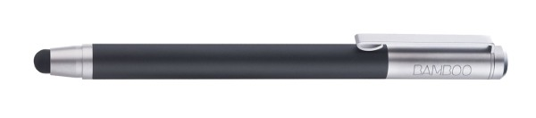

IntroductionBasically, there are three options for using Quill:
Active Stylus
N-trig http://www.n-trig.com is a company that sells a particular hardware solution that is used in a few Android tablets. The active stylus is actually interchangeable between the different N-trig based tablets. Likewise, the Samsung S-pen is interchangeable with certain Wacom pens. Capacitive PenIf there is no special hardware in your tablet to sense an active pen, you can always use a capacitive pen. They can be recognized by their rounded tip, as in this photo:  They are often sold as if they were made for a particular device (for Ipad, for Asus Transformer, for ...) but they are all interchangeable and not tied to a particular tablet. In my limited experience all capacitive pens work about equally well, so I don't have a particular favorite. If you found one that works particularly well for you then please leave a comment! Motorola XYboard (Xoom 2) StylusI still don't know what this one is. It certainly is not a n-trig stylus. It doesn't seem to be able to distinguish pen input from finger touches. My guess is that it is based on the Atmel maxtouch chipset series, http://www.atmel.com/microsite/maxtouch_eseries/. If you have any information please let me know!
| ||||||||||||